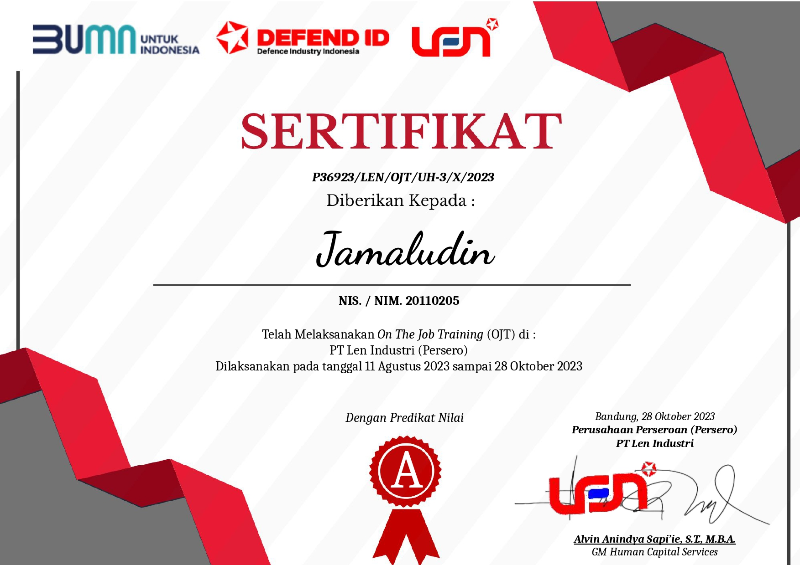
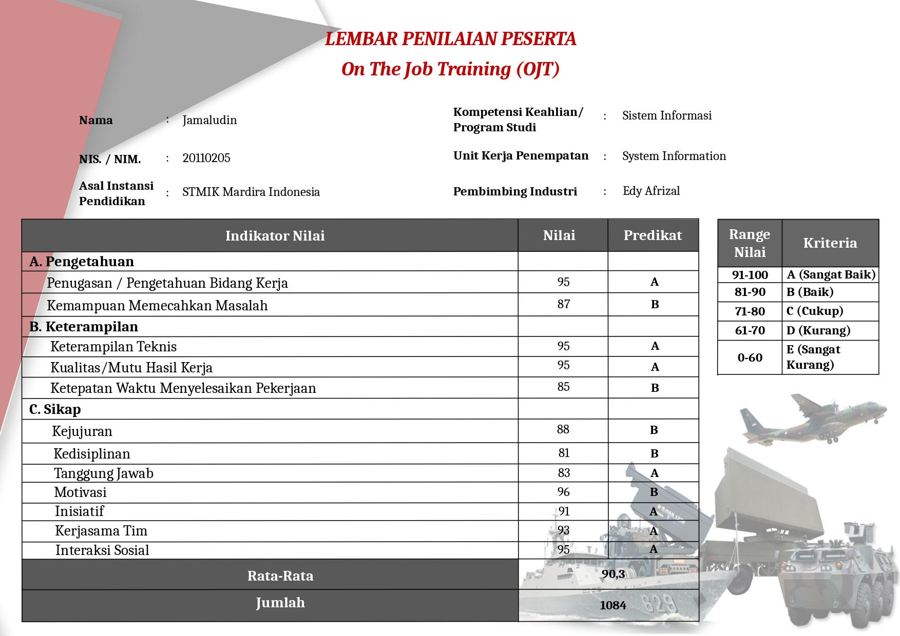

Tentang Saya
Selamat datang di portofolio saya. Saya adalah seorang mahasiswa
tingkat akhir dengan jurusan Teknik Informatika dan memiliki
ketertarikan pada bahasa Programming, IT Support dan Web Developer.
Keterampilan yang saya miliki meliputi kerja tim, kerja keras,
komunikasi yang baik, dan pengembangan keahlian dalam bidang IT.
Pengalaman

IT Infrastructure - Operation Intern | PT Len Industri (Persero)
Pada program ini saya ditempatkan pada divisi IT Infrastruktur dan
Operasi untuk kinerja secara umumnya nyaitu penyedia layanan IT dan
pengelolaan data server. Saya berperan dalam troubleshooting dan
maintenance infrastruktur jaringan dan operasi di PT. Len Industri
(Persero).
August 2023 - Oct 2023



Membuat Aplikasi Sistem Perpustakaan | SMAN 1 Margaasih
Pada perpustakaan SMAN 1 Margaasih pelayanan transaksi peminjaman
dan pengembalian buku masih dilakukan secara manual. Sistem yang
kami buat menggunakan PHP, MySQL, dan CodeIgniter.
Oct 2022 - Feb 2023